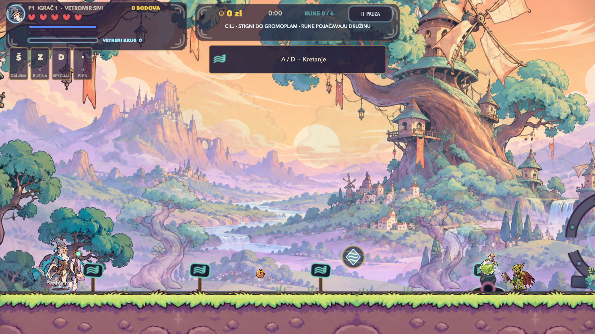
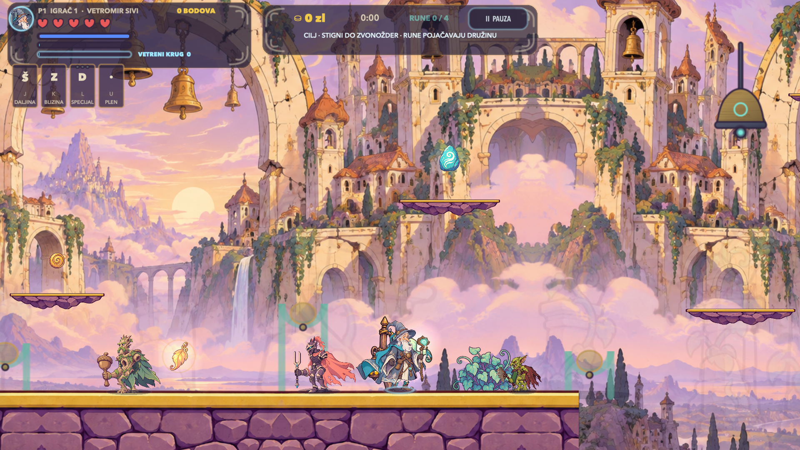
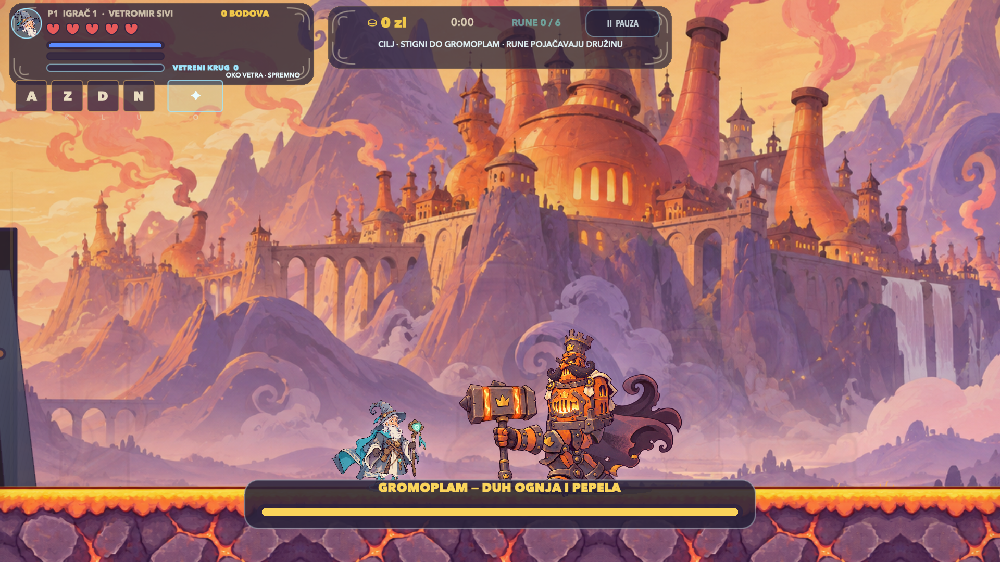
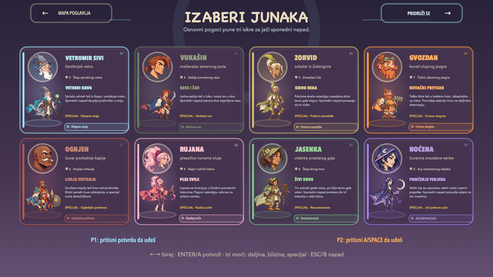
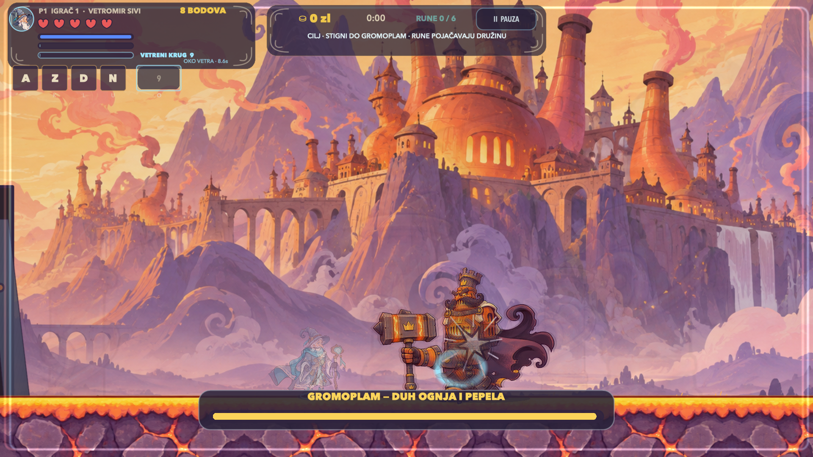
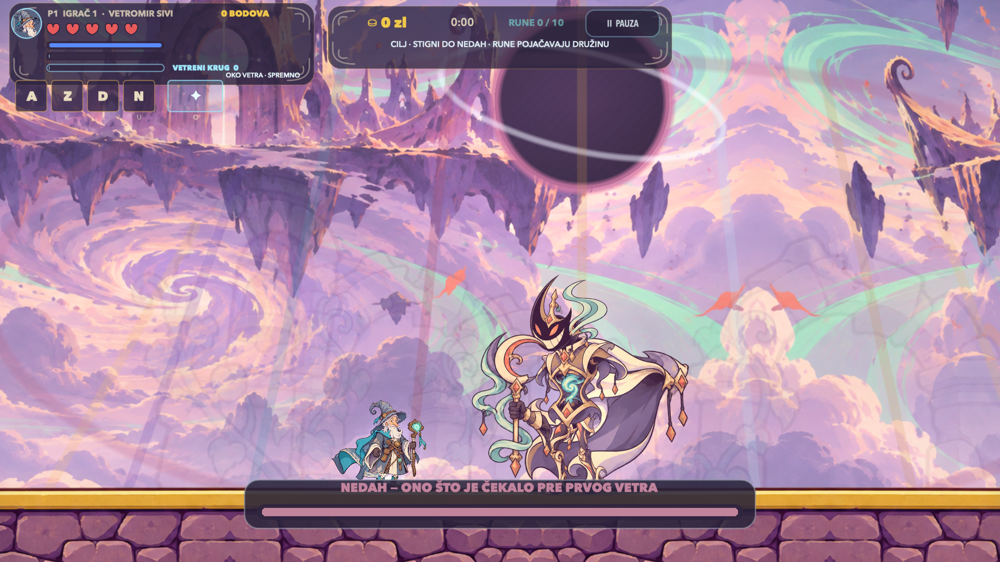

8
Osam različitih arsenala
Oružje, skok, nalet, odbrana, resurs, kontra, super i lični potez zavise od izabranog junaka.
Mrakovina je progutala vetar. Izaberi jednog od osam junaka, pređi deset velikih avantura i otvori put ka NEDAHU, čuvaru Nultog neba.
Pritisni Play za 40 sekundi stvarnog Full HD gameplaya.
Nije samo trčanje i pucanje. Svaki junak menja ritam, svaki svet uvodi novo pravilo, a svaki čuvar traži drugačiji odgovor.
Oružje, skok, nalet, odbrana, resurs, kontra, super i lični potez zavise od izabranog junaka.
Promenljivi skok, coyote vreme, buffer, zidno klizanje, dugi skok, lebdenje i vazdušni udar čine povezan sistem.
Deset velikih poglavlja otključava Nulto nebo, pet faza završnog bossa i trodelni epilog.
Igraj sam ili priključi drugog igrača. Tastatura, miš i kontroler mogu da se podese u meniju.
Oprema, skrivene rune i privremene terenske moći menjaju oružje, veličinu, zaštitu i način prolaska.
Poeni stižu iz borbe, istraživanja i završavanja deonica. Rezultati i profili ostaju lokalno sačuvani.
Platforme, vertikala, zamke, borbene arene i neprijateljske taktike menjaju se kroz pohod.

Prvi svet uvodi precizno kretanje, vertikalne prolaze i neprijatelje koji čuvaju prostor umesto da samo jure prema igraču.
Nebeska ostrva, zaleđeni usponi, korenske dvorane, olujne kapije i gradovi bez odjeka traže drugačije kretanje i drugačiji arsenal.


Napadi se menjaju po fazama, arena postaje deo borbe, a svaki sledeći čuvar je otporniji, brži i taktički zahtevniji.
Nijedan izbor nije samo drugačiji kostim. Svaki junak ima sopstveno oružje, resurs, kretanje, odbranu i završni potez.

Glavni napadi ne dele istu logiku. Junaci grade pritisak, vraćaju projektile, postavljaju sidra, bude semena, zatvaraju prostor ili troše lični resurs za preokret.


Pet obličja, snaga svih prethodnih čuvara zajedno i arena koja se menja dok se boriš. Pobeda otključava završni epilog pohoda.
Za Apple Silicon Mac ili iPhone sa iOS 15 ili novijim. Bez naloga, pretplate i kupovina u igri.
Najjednostavnija instalacija. Otvori DMG i prevuci Vetromir u Applications.
Vetromir-Sivi-7.6-macOS-Apple-Silicon-Serbian.dmgPreuzmi srpski DMGDirektan paket aplikacije za ručno raspakivanje i premeštanje.
Vetromir-Sivi-7.6-macOS-Apple-Silicon-Serbian.zipPreuzmi srpski ZIPDodaj zvanični Vetromir izvor i instaliraj IPA potpisan svojim Apple nalogom.
Vetromir-iPhone-7.7-build23-unsigned.ipaDodaj u AltStoreKompletan provereni projekat. Izaberi Personal Team, poveži iPhone i pritisni Run.
Vetromir-iPhone-7.7-Xcode-Source.zipPreuzmi Xcode paketDa. Nema pretplate, oglasa, kupovina u igri ni vremenskog ograničenja.
Apple Silicon Mac sa macOS 13 ili novijim i iPhone sa iOS 15 ili novijim. iPhone 11 ili noviji je preporučen. iPad nije podržan.
Apple odbija nepotpisane GitHub aplikacije. AltStore ili Xcode lokalno potpisuju besplatan IPA tvojim Apple nalogom; igra ne dobija tvoju lozinku niti šalje podatke.
Da. Vetromir podržava jednog ili dva lokalna igrača. Kontrole tastature, miša i kompatibilnog kontrolera mogu da se promene u meniju.
Aplikacija je ad-hoc potpisana, ali nije Apple notarizovana. Desni klik na aplikaciju pa Open, ili Privacy & Security → Open Anyway, omogućava prvo pokretanje.
Ne. Nema naloga, analitike, telemetrije ni mrežnog servisa. Profil, oprema i rezultati ostaju lokalno na računaru.
Otvori GitHub Issue. Ako ti se igra dopadne, klikni Star na vrhu repozitorijuma.
Deset avantura i Nulto nebo dostupni su odmah. Pohod je besplatan i napredak ostaje na tvom uređaju.
{kind=link}
{kind=link}
{kind=link}
{kind=link}
{kind=link}